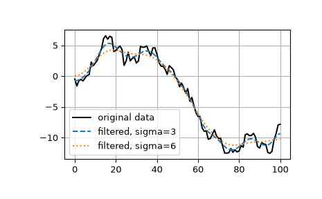

gaussian_filter1d#
- scipy.ndimage.gaussian_filter1d(input, sigma, axis=-1, order=0, output=None, mode='reflect', cval=0.0, truncate=4.0, *, radius=None)[source]#
1-D Gaussian filter.
- Parameters:
- inputarray_like
The input array.
- sigmascalar
standard deviation for Gaussian kernel
- axisint, optional
The axis of input along which to calculate. Default is -1.
- orderint, optional
An order of 0 corresponds to convolution with a Gaussian kernel. A positive order corresponds to convolution with that derivative of a Gaussian.
- outputarray or dtype, optional
The array in which to place the output, or the dtype of the returned array. By default an array of the same dtype as input will be created.
- mode{‘reflect’, ‘constant’, ‘nearest’, ‘mirror’, ‘wrap’}, optional
The mode parameter determines how the input array is extended beyond its boundaries. Default is ‘reflect’. Behavior for each valid value is as follows:
- ‘reflect’ (d c b a | a b c d | d c b a)
The input is extended by reflecting about the edge of the last pixel. This mode is also sometimes referred to as half-sample symmetric.
- ‘constant’ (k k k k | a b c d | k k k k)
The input is extended by filling all values beyond the edge with the same constant value, defined by the cval parameter.
- ‘nearest’ (a a a a | a b c d | d d d d)
The input is extended by replicating the last pixel.
- ‘mirror’ (d c b | a b c d | c b a)
The input is extended by reflecting about the center of the last pixel. This mode is also sometimes referred to as whole-sample symmetric.
- ‘wrap’ (a b c d | a b c d | a b c d)
The input is extended by wrapping around to the opposite edge.
For consistency with the interpolation functions, the following mode names can also be used:
- ‘grid-mirror’
This is a synonym for ‘reflect’.
- ‘grid-constant’
This is a synonym for ‘constant’.
- ‘grid-wrap’
This is a synonym for ‘wrap’.
- cvalscalar, optional
Value to fill past edges of input if mode is ‘constant’. Default is 0.0.
- truncatefloat, optional
Truncate the filter at this many standard deviations. Default is 4.0.
- radiusNone or int, optional
Radius of the Gaussian kernel. If specified, the size of the kernel will be
2*radius + 1, and truncate is ignored. Default is None.
- Returns:
- gaussian_filter1dndarray
Returned array of same shape as input.
Notes
The Gaussian kernel will have size
2*radius + 1along each axis. If radius is None, a defaultradius = round(truncate * sigma)will be used.Array API Standard Support
gaussian_filter1dhas experimental support for Python Array API Standard compatible backends in addition to NumPy. Please consider testing these features by setting an environment variableSCIPY_ARRAY_API=1and providing CuPy, PyTorch, JAX, or Dask arrays as array arguments. The following combinations of backend and device (or other capability) are supported.Library
CPU
GPU
NumPy
✅
n/a
CuPy
n/a
✅
PyTorch
✅
⛔
JAX
⚠️ no JIT
⛔
Dask
⚠️ computes graph
n/a
See Support for the array API standard for more information.
Examples
>>> from scipy.ndimage import gaussian_filter1d >>> import numpy as np >>> gaussian_filter1d([1.0, 2.0, 3.0, 4.0, 5.0], 1) array([ 1.42704095, 2.06782203, 3. , 3.93217797, 4.57295905]) >>> gaussian_filter1d([1.0, 2.0, 3.0, 4.0, 5.0], 4) array([ 2.91948343, 2.95023502, 3. , 3.04976498, 3.08051657]) >>> import matplotlib.pyplot as plt >>> rng = np.random.default_rng() >>> x = rng.standard_normal(101).cumsum() >>> y3 = gaussian_filter1d(x, 3) >>> y6 = gaussian_filter1d(x, 6) >>> plt.plot(x, 'k', label='original data') >>> plt.plot(y3, '--', label='filtered, sigma=3') >>> plt.plot(y6, ':', label='filtered, sigma=6') >>> plt.legend() >>> plt.grid() >>> plt.show()
